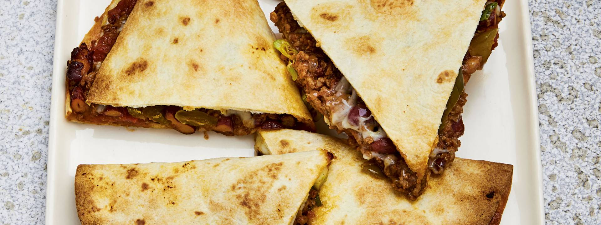

Mexican Beef and Jalapeno Quesadillas
Home

Serves 4
Ingredients
Main
- 2 tbsp olive oil, pluse extra for brushing
- 1 onion, peeled and diced
- 2 garlc cloves, peeled and crushed
- 500g minced beef
- 2 tsp paprika
- 2 tsp ground cumin
- 1 × 400g tin of chopped tomatoes
- 1 × 400g tin of kidney beans, drained and rinsed
- 200g mixture of grated mozzarella and Cheddar cheese
- 4 spring onions, trimmed and sliced
- 80g pickled jalapeño chillies
- 4 × 25cm tortillas
- Sea salt and freshly ground black pepper
- Sour cream, to serve
For the salsa
- 4 tomatos, diced
- 1 red onion, peeled and finely diced
- Large handful of coriander, roughly chopped
- Juice of 1 lime
Steps
- Preheat the oven to 220 degrees celcius. Line two large baking trays with baking papers
- Place a large, non-stick frying pan over a high heat. Add the oil and onion and cook for 2-3 minutes, or until the onion has softened. Add the garlic and cook for 2 minutes, then crumble in the minced beef Cook over a high heat for 4-5 minutes, or until the mince is lightly browned.
- Stir in the spices and cook for 1-2 minutes. Add the tinned tomatoes, cook for 2 minutes, then remove from the heat. Stir in the kidney beans and season to taste.
- Lightly brush one side of a tortilla with extra oil and place on a prepared tray, oiled side down. Sprinkle a little cheese over one half and spread a quarter of the beef mixture on top. Scatter some spring onions, jalapeños and cheese on top before folding over the tortilla. Repeat for the remaining tortillas.
- rush one side of the 2 remaining tortillas with oil and place on top of the beef filling, oiled side up. Press them down firmly and place on the two highest shelves of the oven for 10-15 minutes, or until golden brown.
- While the quesadillas are cooking, mix all the salsa ingredients in a bowl and season to taste.
- Remove the quesadillas from the oven and cut into wedges before serving with a dollop of sour cream and some salsa on the side.